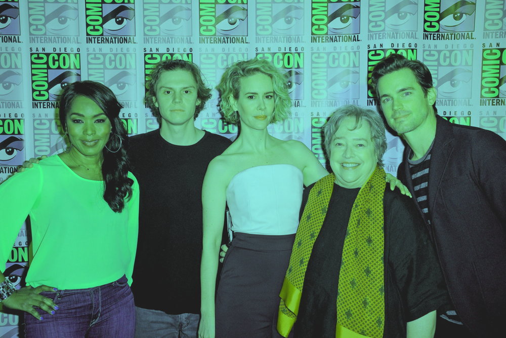
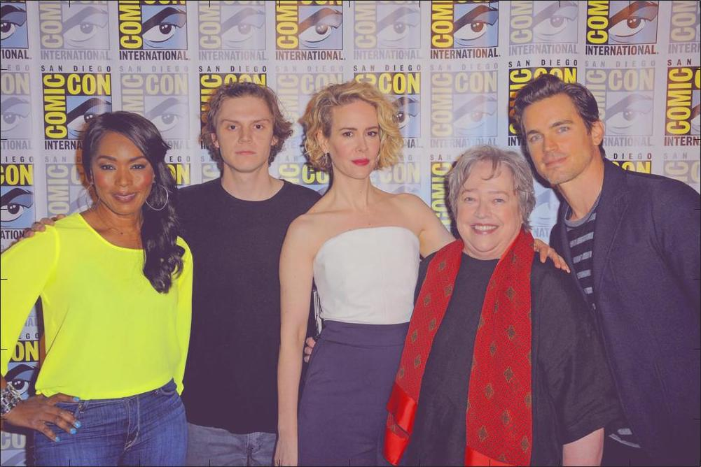
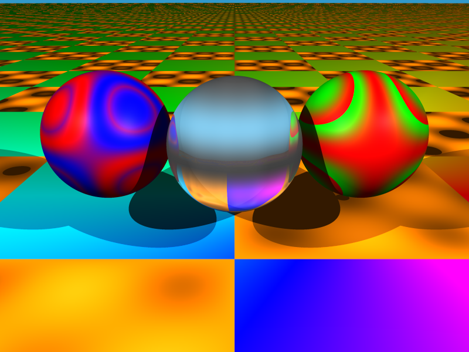
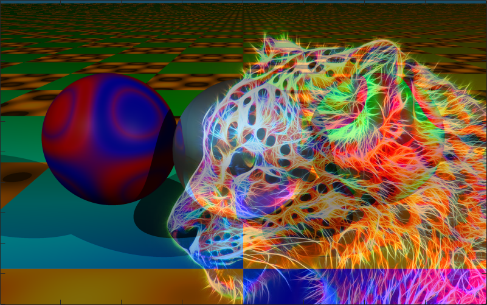
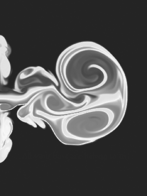
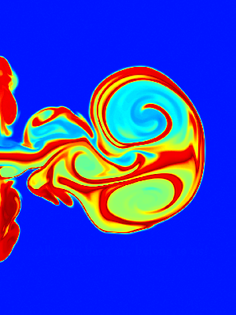
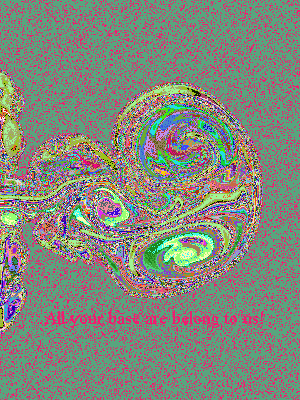
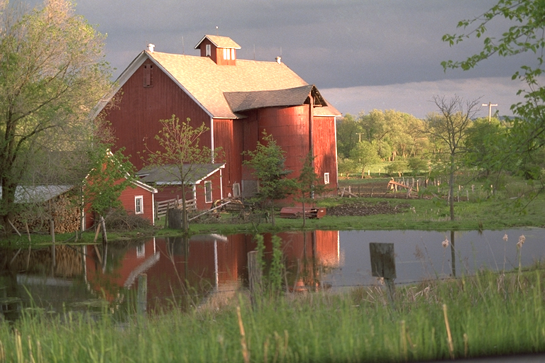

linearly-discolored image

color-corrected by applying a linear transformation; matrix generated by sampling six points and estimating their original colors
Image Superposition w/ Arithmetic Operations
leopard.jpg image obtained from here

cwheel.bmp image obtained from Professor Alan Peters
leopard.jpg & cwheel.bmp, combined using feature-scaled pixel-wise products

leopard.jpg & cwheel.bmp, combined using pixel-wise averages
8-bit Color Maps
plume.bmp, no color map image obtained from Professor Alan Peters

plume.bmp, 8-bit grayscale color map

plume.bmp, jet(256) color map. see here for more information

plume.bmp, random color map
MATLAB JPEG Image Compression
Full-Sized Images

house.bmp, size: 1.2MB image obtained from Professor Alan Petershouse.jpg, quality: 100, size: 347KB